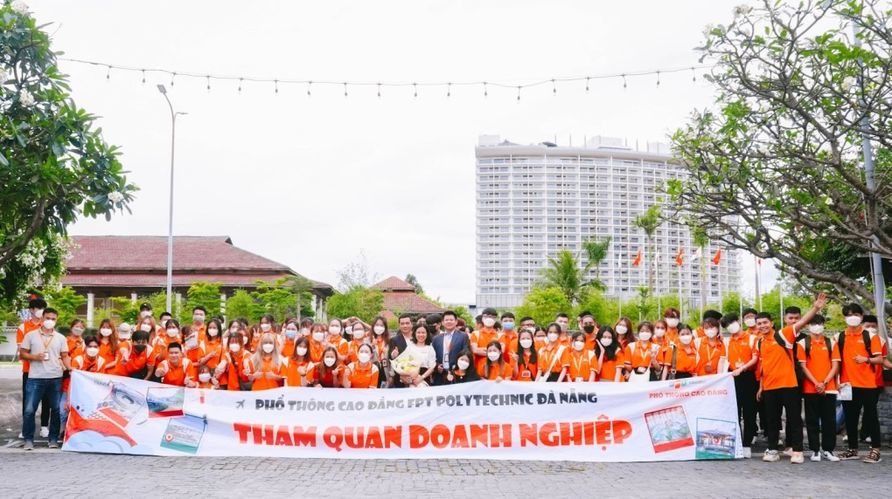

ĐÂY LÀ CÁI SLOGAN

Lợi thế khi học Phổ thông Cao đẳng - FPT Polytechnic
Sinh viên theo học Phổ thông Cao đẳng - FPT Polytechnic có thể nhận bằng Cao đẳng sau ba năm, tiếp cận chương trình chú trọng thực hành và trải nghiệm thực tế.
Phổ thông Cao đẳng - FPT Polytechnic là chương trình giáo dục của Trường Cao đẳng FPT Polytechnic thuộc Tổ chức giáo dục FPT, dành cho học sinh sau tốt nghiệp THCS. Chương trình chú trọng xây dựng nội dung đào tạo theo phương châm "thực học - thực nghiệp".
Sinh viên có thể tiết kiệm thời gian, đi làm sớm hơn so với nhiều bạn đồng trang lứa khi theo học chương trình chỉ kéo dài ba năm. Trong thời gian này, các bạn có thể trang bị đầy đủ các kiến thức, kỹ năng nghề nghiệp cần thiết để làm việc trong tương lai.

Sinh viên Phổ thông Cao đẳng - FPT Polytechnic trong giờ học. Ảnh: Phổ thông Cao đẳng - FPT Polytechnic
Phổ thông Cao đẳng - FPT Polytechnic có khung chương trình chú trọng việc thực hành. Điều này giúp sinh viên ứng dụng tối đa kiến thức vào thực tiễn, tăng trải nghiệm thực chiến, đồng thời, giúp tạo dựng sự tự tin, vững vàng khi bước vào thị trường lao động.
Đơn vị cũng ưu tiên thiết kế chương trình phát triển, rèn luyện các kỹ năng mềm theo yêu cầu của nhà tuyển dụng tại doanh nghiệp như giao tiếp, thuyết trình, tư duy nhạy bén,... Bên cạnh đó, các bạn còn được học các môn học nghệ thuật, võ thuật, giúp nâng cao sức khỏe, tính linh hoạt.
"Những điều này đảm bảo tạo bệ phóng vững chắc cho sinh viên sẵn sàng tiếp cận thị trường lao động", đại diện chương trình khẳng định.
Sinh viên Phổ thông Cao đẳng - FPT Polytechnic trong tiết học võ Vovinam. Ảnh: Phổ thông Cao đẳng - FPT Polytechnic
Ngoài ra, người học có thể thường xuyên tham gia kiến tập, tham quan các doanh nghiệp đối tác, từ đó, tiếp xúc trực tiếp với môi trường làm việc thực tiễn và nắm bắt cơ hội việc làm tiềm năng. Theo ước tính thực tế, 97,7% sinh viên tại FPT Polytechnic có việc làm ngay sau khi tốt nghiệp.

Sinh viên Phổ thông Cao đẳng - FPT Polytechnic trong chuyến tham quan doanh nghiệp. Ảnh: Phổ thông Cao đẳng - FPT Polytechnic
Song song, chương trình được trang bị đầy đủ kiến thức văn hóa phổ thông theo quy định của Bộ Giáo dục và Đào tạo cùng các nội dung chuyên môn, kỹ năng nghề nghiệp. Đây là mô hình đào tạo dựa trên chủ trương phân luồng học sinh sau trung học cơ sở được cụ thể hóa trong đề án Giáo dục hướng nghiệp và định hướng phân luồng học sinh trong giáo dục phổ thông giai đoạn 2018-2025.
Theo đại diện trường Cao đẳng FPT Polytechnic, mô hình này có ý nghĩa quan trọng đối với mỗi cá nhân và toàn xã hội, góp phần cung ứng nguồn nhân lực phù hợp với nhu cầu phát triển kinh tế - xã hội; tránh tình trạng thất nghiệp, làm trái ngành đang tăng dần mỗi năm tại Việt Nam.